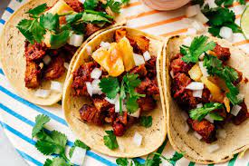

Tacos al Pastor

Description
Taco al Pastor also referred to as tacos de trompo is a split grilled pork taco that originates from central mexico. Today the dish widely known and is a favorite in mot taquerías.
Ingredients
For the Pork:
- 5 Goya Guajillo Chiles
- 5 Goya Pasilla Chiles or Goya Ancho Chiles
- 1 chipotle pepper from a can of Goya Chipotle Chile in Adobo Sauces
- 1 medium white onion, halved
- 1 (20 ounce) can Goya Pineapple Chunks
- ¼ cup Goya White Vinegar
- 2 tablespoons Goya Minced Garlic
- 1 teaspoon Goya Cumin
- Goya Adobo with Pepper, to taste
- 1 (2 1/2 pound) boneless, skinless pork butt, cut into 1/2-inch cubes
- 2 tablespoons Goya Vegetable Oil
For the Garnish:
- 1 (10 ounce) package Goya Corn Tortillas, warmed
- 2 tablespoons finely chopped fresh cilantro
- 1 lime, cut into wedges
Steps
- Bring 2 cups water to boil in medium saucepan over medium-high heat. Add guajillo and pasilla chiles. Reduce heat to medium-low and simmer until chiles soften, about 10 minutes; transfer to plate. Remove and discard stem and seeds. Meanwhile, coarsely chop one onion half; reserve remaining half. Strain pineapples; reserve juice and fruit separately.
- Transfer guajillo, pasilla and chipotle chiles, chopped onion half, reserved pineapple juice, vinegar, garlic and cumin to bowl of food processor. Puree until smooth, about 2 minutes. Transfer chile mixture to saucepan over medium-high heat. Bring chile mixture to a boil; cook until paste loses raw onion taste, about 2 minutes. Season with Adobo; cool. In large container with lid, or in large ziptop bag, combine pork cubes, cooled chile marinade and reserved pineapple chunks; transfer to refrigerator. Marinate at least 2 hours, or up to 24 hours.
- Heat oil in large skillet over medium-high heat. Strain pork and pineapples, discarding marinade. Add pork and pineapples to skillet. Cook in batches until dark golden brown on all sides and cooked through, about 15 minutes; transfer to large serving plate.
- Meanwhile, finely slice remaining onion half. Transfer sliced onion to bowl with cilantro. Serve pork and pineapple mixture in warm tortillas. Garnish pork tacos with cilantro, onions and limes.
Tips!
Warm, soft tortillas, every time! Achieving perfectly warm and pliable tortillas can be tricky business: We find the microwave results in gummy, chewy rounds while the oven dries them out. Our tried-and-true method: steaming. To do, fill a steamer with 1/2 inch water; bring to a boil and reduce heat to medium-low. In the meantime, wrap the tortillas in a dish towel. Then, place the bundle in the steamer, cover with a tight-fitting lid and heat until warm, about 10 minutes.
Back to Front